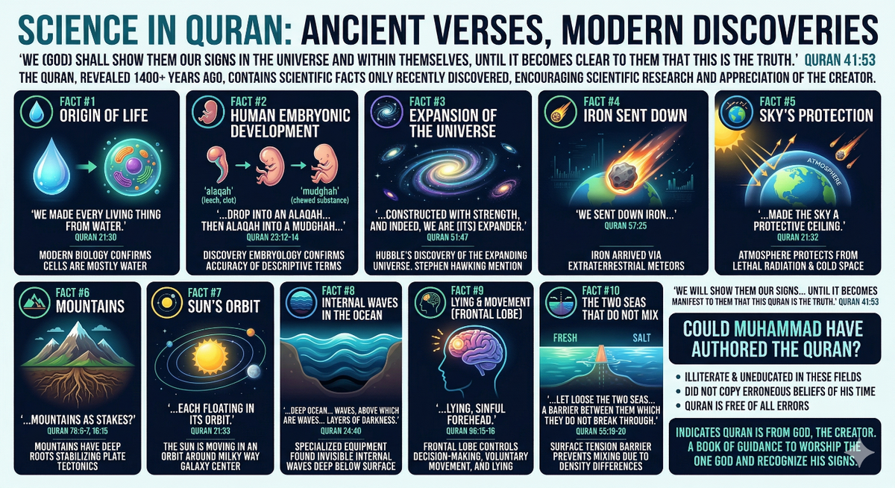

Purpose of Life
Why are we here? What do we do?
"I only created jinn and humans to worship Me." Quran 51:56
Evidence for the Existence of Allah سُبْحَانَهُ وَتَعَالَىٰ
1. The Beginning of the Universe
Imagine walking in a desert and finding a watch. Glass from sand, plastic from oil, metal from the ground — all components are in the desert. Would you believe the watch formed itself? The most rational explanation is that a powerful, intelligent, timeless Being created the universe — this aligns perfectly with modern science, which confirms the universe is finite and has a beginning.
2. Perfection of the Universe
The earth's distance from the sun, the thickness of its crust, the speed of rotation, the percentage of oxygen in the atmosphere, the earth's tilt — if any of these were slightly different, life could not exist. This precise design points unmistakably to an intelligent Creator.
3. Revelation from Allah سُبْحَانَهُ وَتَعَالَىٰ
The Quran — over 1,400 years old — contains scientific facts unknown to people of that time. It is free from errors, preserved word-for-word in its original Arabic, and has a unique style that stands at the pinnacle of Arabic eloquence. The Prophet Muhammad ﷺ was known to be illiterate — he could not read or write — yet the Quran was revealed through him.
So... Why am I here?
Our body parts — eyes, ears, brain, heart — all have a purpose. Wouldn't the individual as a whole also have one? Allah سُبْحَانَهُ وَتَعَالَىٰ did not create us to wander aimlessly. We have a higher purpose: to acknowledge and worship Him alone, so that we live guided lives — in prayer, honesty, care for neighbours, support for family, and benefit to society.
So... What do I do now?
The test of faith is in using our intellect to recognise Allah's سُبْحَانَهُ وَتَعَالَىٰ signs and live by His guidance. This is done by submitting — which in Arabic means becoming a "Muslim." Allah سُبْحَانَهُ وَتَعَالَىٰ has made Islam accessible to everyone, regardless of background or history.
Halal and Haram in Islam
Halal (حلال) — permissible or lawful in Islamic law. Haram (حرام) — forbidden; either sacred things restricted to the uninitiated, or sinful actions forbidden to be done.
| ✗ Haram — Forbidden | ✓ Halal — Permitted |
|---|---|
| Alcohol & intoxicants | Water, milk, honey, pure food |
| Fornication & adultery (Zina) | Marriage (Nikah) |
| Riba (usury/interest) | Honest trade & charity |
| Backbiting (Ghibah) | Speaking good or staying silent |
| Arrogance (Takabbur) | Humility (Tawadu') |
| Harming others | Mercy, kindness & forgiveness |
| Shirk (associating partners with Allah) | Tawhid — pure worship of Allah alone |
The 8 Recipients of Zakat (Quran 9:60)
Zakat must be distributed only to these eight categories — no others.
"A duty imposed by Allah. And Allah is All-Knower, All-Wise." Quran 9:60
Creator and Its Creation
"We shall show them Our Signs in the universe and within themselves, until it becomes clear to them that this is the Truth." Quran 41:53
If there is a creation → there must be a Creator.
If there is a Creator → He must be the Sustainer.
The Creator cannot create Himself.
If He is the sole Creator/Sustainer → He must be ONE.
Science in the Quran — 10 Key Facts

"And We made every living thing from water. Will they not believe?" (Quran 21:30) — Cells are mostly water; discovered only after the microscope.
The Quran describes embryo stages as alaqah (leech/blood clot) then mudghah (chewed substance). (Quran 23:12–14) — matching modern embryology precisely.
"And the heaven We constructed with strength, and indeed We are its expander." (Quran 51:47) — Confirmed by Hubble in the 20th century.
"We sent down iron with its great inherent strength." (Quran 57:25) — Scientists confirm iron came to Earth from outer space via meteorites.
"We made the sky a protective ceiling." (Quran 21:32) — The atmosphere shields Earth from lethal solar radiation and freezing space.
"Did We not make the earth a resting place and the mountains as stakes?" (Quran 78:6–7) — Mountains have deep roots like pegs; confirmed by plate tectonics.
"Each floating in its orbit." (Quran 21:33) — The Sun orbits the centre of the Milky Way; not stationary as previously believed.
"A deep ocean covered by waves, above which are waves, above which are clouds, layers of darkness..." (Quran 24:40) — Internal underwater waves confirmed only with specialised equipment.
"His lying, sinful forehead." (Quran 96:15–16) — The frontal lobe governs lying and voluntary movement; confirmed by modern brain imaging.
"He has let loose two seas converging together, with a barrier between them which they do not break through." (Quran 55:19–20) — Surface tension barriers between seas confirmed by oceanographers.
The Prophet ﷺ was known to be illiterate — he could neither read nor write. He lived in an era of primitive science. Yet the Quran contains no scientific errors whatsoever. The only rational explanation: it is the Word of Allah سُبْحَانَهُ وَتَعَالَىٰ.